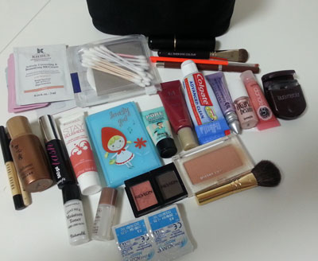
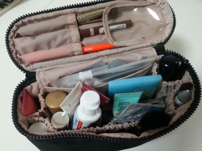
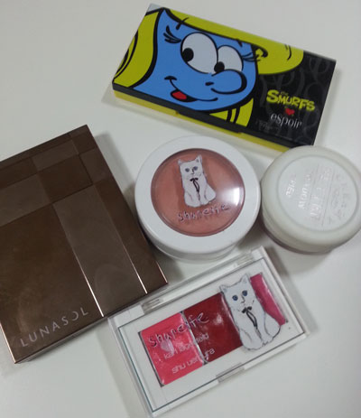
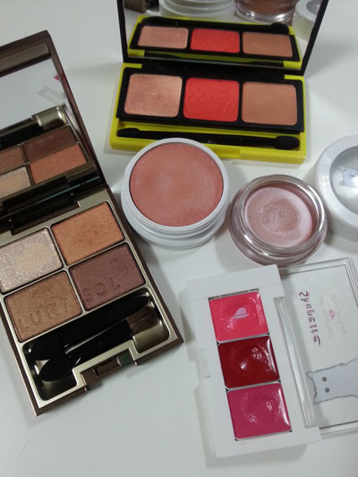
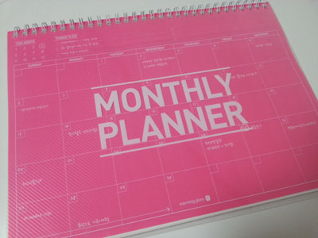

2박3일 부산여행용 파우치
내용물 선택기준은 잃어버리거나 깨지더라도 후회없는 제품들로 ^^;;;
수분크림, BB샘플 / 면봉, 화장솜 / 록시땅 그린티 향수 / 브러시 / 메이블린 브라운 아이라이너
바비브라운 미니 브러시 2 / 설화수 앰플 / 베네핏 마스카라 / 림멜런던 블러셔 (004 sunkissed cherry)
미니 손거울 / 베네핏 포어페셔널(이건 항상 사용하는걸 까묵는다;; 화장 다 하고 깨달음^^;;) / 미샤BB
치약 / 얼반디케이 아이프라이머 / 베네핏 하이빔 / 베네핏 립글로스
로라메르시에 미니 뷰러 (지금생각해도 이걸 왜 £11 주고 샀는지;;;)
토니모니랑 더샘에서 받은 스킨케어 샘플 / 레브론 아이섀도우 / 미샤 브론저 / 베어미네랄 미니브러시
일회용 렌즈(내 눈알!!)
.....헥헥 적고보니 겁나많아;;
립스틱은 평소 쪼매난 파우치에 따로 들고 다니니 넣지않았음
최근 최고 잘 바르는건 맥 임패션드 / 랑콤 립글로스 요 두개

그리고 죠 위에걸 전부 파우치에 넣으면 요래요래
일주일 이하 여행에서는 항상 요렇게 들고다님
그 이상이면 아이섀도우나 립스틱이 1-2개 추가되는정도.....라지만
것도 사실 여행가믄 귀찮아서 잘 안쓰게 됩니다 녜;;

그리고 이건 최근 자주 사용하는 제품들 :)
환경의 무서움이란^^
여러분 한국에 오게되니 제가 화장을 합니다!!
아이라인은 안그리지만 최소 섀도우랑 립스틱 정도는 바르게 되더군요 헛헛
케이스 이쁘다고 야곰야곰 사 모으면서도 이거 언제 쓰지? 쓰긴쓰나? 싶었는데
매일같이 사용하니 쪼매 사용감(....)이 묻어나는 화장품들을 보면서
오오~나 이거 사용하고있어!! 줄고있다고!! 이러믄서 신기해 하고있습니다 ^^;;;

에스쁘아 스머페트
윈썸좋아!! +ㅂ+b 마무리 반짝이는 항상 요걸로
루나솔 베이지오렌지
의외로 왼쪽위 반짝이는 잘 손이 안간다 / 하지만 나머지 3색은 다 좋아 ;ㅂ;
어퓨 크리미 버터 섀도우 / 2호 빈티지 로즈
이거 인터넷에서 볼때마다 색이 늠 내 취향이라서 갖고싶었는데
우째 명동 놀러갈때마다 매장에 없었당;; 이대근처 놀러갔다가 발견하고 구입 ^^
최근 베이스는 무조건 이걸로 깐당 :)
슈에무라 슈페트 립팔레트
바닥이 보인다 :D :D
스킨푸드 생과일 립 앤 치크 를 구입했다가 오히려 이 팔레트의 훈늉함을 깨달았음
색이 늠 맑고 예쁘당//ㅂ//
슈에무라 슈페트 크림 블러셔 오렌지
데일리로 최고 잘 바르는중 :)
+먼슬리 플래너 구입

컴/모바일에서 캘린더를 쓰긴하는데 그래도 하나 필요하겠다 싶어서 구입
그리고 전에 이걸 Mon - Sun 이 아니라 Sun - Sat 배열이라 안샀었다는걸 깨달았다
..........OTL 머리가나쁘면 이래서 안뒤야 ㅡㅜ
애초에 Mon - Fri 작업할거 정리할려고 산거니께;;; 여튼 샀으니 함 써볼렵니다;;
토요일 하루종일 집에서 뒹굴뒹굴
먹고자고간식먹고자고다시뒹굴면서 하루를 보냄
그리고 밤11시가 되어야 뭘 하기 시작한다능;;
이제 슬슬 짐을 싸볼까나^^;;;
+ask.fm 계정만들었습니다 :)
ask사용하시는분들 계신가요 ^^